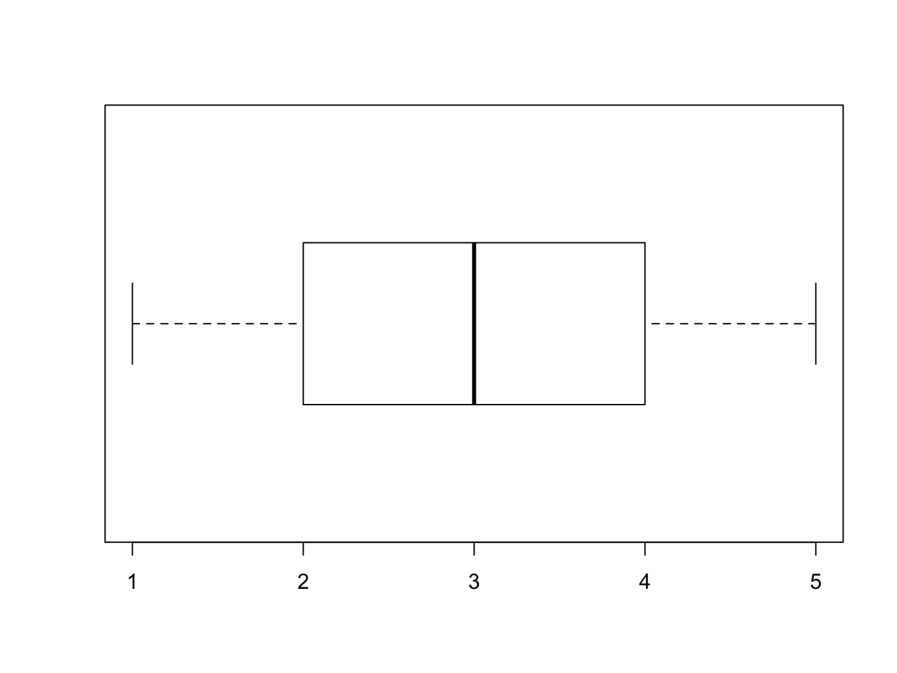

Chương 4 Phân tích mô tả
4.1 Vì sao phải thực hiện phân tích mô tả?
Phân tích mô tả là bước phân tích đầu tiên và quan trọng trong mỗi phân tích, nhằm mục tiêu mô tả một cách đầy đủ, trung thực và súc tích về bộ dữ liệu đang có.
Mặc dù phân tích mô tả thường bị xem nhẹ, việc thực hiện giai đoạn phân tích này đem lại những ứng dụng to lớn:
Kiểm tra dữ liệu: các công cụ của thống kê mô tả (các chỉ số thống kê, biểu đồ) được sử dụng rất hữu hiệu để kiểm tra và làm sạch dữ liệu (xem thêm Chương 2).
Hiểu dữ liệu: chúng ta cần hiểu dữ liệu của mình trước khi tiến hành phân tích chính thức. Các phân tích mô tả tuy đơn giản nhưng có thể giúp cung cấp thông tin quan trọng về dữ liệu một cách nhanh chóng, giúp chúng ta hiểu hơn về bộ dữ liệu mà mình đang phân tích.
Lựa chọn hướng phân tích và phương pháp phân tích phù hợp: thống kê mô tả thường được dùng để đánh giá sự phù hợp của các giả định về dữ liệu (ví dụ như phân phối của các biến số), từ đó góp phần định hướng phương pháp phân tích phù hợp.
4.2 Ví dụ Anscombe
data("anscombe")
knitr::kable(
dat, caption = 'Dữ liệu Anscombe',
booktabs = TRUE
)| id | ngaysinh | ngaync | gioitinh | hct0 | cannang_kg |
|---|---|---|---|---|---|
| 001 | 2013-05-08 | NA | Nam | 49 | 10 |
| 002 | 2018-12-03 | 2018-02-03 | Nữ | 250 | 50 |
| 003 | 2013-12-20 | 2018-12-13 | Nam | 50 | 20 |
| 003 | 2013-12-20 | 2018-12-13 | Nam | 50 | 20 |
4.3 Nhắc lại về phân phối xác suất
Vì trọng tâm của phân tích mô tả là mô tả các biến số trong bộ dữ liệu, cụ thể hơn là phân phối của các biến số đó, nên phân phối xác suất (probability distribution, probability density) là một khái niệm cần được làm rõ. Phân phối xác suất của một biến số là một công thức toán học mô tả xác suất xuất hiện của từng giá trị biến số (với biến số rời rạc) hoặc của từng khoảng giá trị biến số (với biến số liên tục) (B. S. Everitt 2010). Phối phối xác suất này có thể được biểu diễn bằng biểu đồ, và qua biểu đồ này chúng ta có thể thấy được các giá trị có thể có của một biến số, cùng với tần suất hay khả năng xuất hiện của mỗi giá trị đó.
Dưới đây là một ví dụ về phân phối xác suất của biến số về số lượng tiểu cầu trong máu, trong bộ dữ liệu mẫu:
hist(baseline$plt/1000, xlab = "Số lượng tiểu cầu (1000/mm3)", ylab = "Tần số", main = NULL)Hình 4.1: Phân phối xác suất của số lượng tiểu cầu trong máu ở bộ dữ liệu mẫu
Vì số lượng tiểu cầu là biến số liên tục, giá trị của biến số này được chia thành những khoảng bằng nhau nhỏ hơn và tần số của mỗi khoảng giá trị được thể hiện bằng độ cao của các cột trong biểu đồ. Trong ví dụ trên có thể thấy, số lượng tiểu cầu trong máu của các đối tượng tham gia nghiên cứu dao động từ 0 đến khoảng 400,000/mm3. Trong đó, thường gặp nhất là khoảng giá trị từ 100,000 đến 150,000/mm3.
4.3.1 Phân phối bình thường
Trong các phân phối xác suất, phân phối bình thường (normal distribution hay Gaussian distribution), hay được gọi là phân phối chuẩn, là phân phối xác suất thường được nhắc đến trong các phân tích thống kê. Với một biến số ngẫu nhiên \(X\), nếu biến số này có phân phối bình thường, xác suất xuất hiện \(f(x)\) cho giá trị \(x\) của biến số đó được tính như sau (B. S. Everitt 2010):
\[ f(x) = \frac{1}{\sigma \sqrt{2\pi}} \left[-\frac{(x - \mu)^2}{2\sigma^2}\right] \] Trong đó \(\mu\) và \(\sigma\) lần lượt là trung bình và độ lệch chuẩn của \(X\).
Về hình dạng, phân phối bình thường có hình dạng đặc trưng là hình chuông úp (bell-shape), cân xứng hai bên với đỉnh là giá trị trung bình. Hình minh hoạ dưới đây là phân phối của số lượng tiểu cầu, với 100,000 giá trị đo được lấy ngẫu nhiên từ một phân phối bình thường với trung bình là 134,000/mm3 và độ lệch chuẩn là 61,000/mm3:
set.seed(100)
pltran <- rnorm(n = 100000, mean = 134, sd = 61)
hist(pltran, xlab = "Số lượng tiểu cầu (1000/mm3)", ylab = "Tần số", main = NULL)Hình 4.2: Phân phối xác suất của số lượng tiểu cầu được giả lập từ phân phối bình thường
Lưu ý vì đây chỉ đơn thuần là số liệu giả lập dựa trên công thức phân phối xác suất bình thường với trung bình là 134,000/mm3 và độ lệch chuẩn là 61,000/mm3 cho mục đích minh hoạ, có một số giá trị nằm trong khoảng -100 đến 0, vốn không thể xảy ra trong thực tế.
Phân phối bình thường được biết đến rộng rãi và rất quan trọng trong thống kê vì những lý do sau:
- Đơn giản về toán học: chỉ cần hai thông số là trung bình và độ lệch chuẩn, chúng ta có thể mô tả được toàn bộ phân phối.
- Là cơ sở của rất nhiều các phương pháp thống kê, thông qua định lý giới hạn trung tâm (Central Limit Theorem), với nội dung chính là nếu một biến số ngẫu nhiên \(Y\) có trung bình trong dân số là \(\mu\) và độ lệch chuẩn trong dân số là \(\sigma\) thì giá trị trung bình \(\bar{y}\), trong một mẫu gồm \(n\) đối tượng, sẽ có phân phối xấp xỉ phân phối bình thường với trung bình \(\mu\) và độ lệch chuẩn \(\frac{\sigma}{\sqrt{n}}\) khi \(n\) đủ lớn (B. S. Everitt 2010).
4.4 Mô tả biến số phân nhóm
4.4.1 Biểu đồ
- Biểu đồ cột

4.4.2 Chỉ số
- Tần số: là số lần xuất hiện của một giá trị.
- Tỷ lệ phần trăm: là tỷ lệ giữa tần số của một giá trị so với tổng số giá trị.
4.5 Mô tả biến số liên tục
4.5.1 Biểu đồ
4.5.1.1 Histogram
Ví dụ ta cần mô tả dữ liệu gồm các giá trị:
1, 5, 2, 3, 4, 3, 4, 2, 3
Khi xếp thứ tự các giá trị này từ nhỏ đến lớn thì ta được như sau:
1, 2, 2, 3, 3, 3, 4, 4, 5
Xếp các giá trị lại thành cột
## 3
## 2 3 4
## 1 2 3 4 5Kết quả thu được từ những bước trên tương ứng với histogram sau

4.5.1.2 Boxplot
Dữ liệu nói trên cũng có thể được trình bày thành dạng biểu đồ như sau:

4.5.2 Chỉ số
4.5.2.1 Mô tả vị trí tập trung
Trung bình (mean)
Được tính bằng cách lấy tổng tất cả các giá trị trong một biến chia cho số lượng giá trị của biến đó. Trung bình thường được thể hiện bằng công thức:
\[\bar{x} = \frac{1}{n} \sum_{i=1}^{n}x_{i}\]
Tối ưu nếu dữ liệu có phân phối tương đối:
- Đối xứng
- Không có đuôi quá dài hoặc giá trị ngoại lai (outlier)
Hầu hết các mô hình và kiểm định thống kê dựa trên trung bình.
Trung vị (median)
Là giá trị ở chính giữa của của một biến số liên tục khi sắp xếp theo thứ tự tăng dần. Ví dụ cho một biến số gồm các giá trị 1, 3, 4, 7, 6, 8, 9. Để xác định trung vị, đầu tiên ta sắp xếp các giá trị này theo thứ tự tăng dần như sau:
1, 3, 4, 6, 7, 8, 9
Dễ thấy giá trị ở chính giữa chính là 6.
Trong trường hợp số lượng các giá trị là số chẵn, ví dụ:
1, 3, 4, 6, 7, 8, 9, 11
Thì trung vị là giá trị trung bình của hai giá trị ở chính giữa. Cụ thể ở đây là (6+7)/2 = 6.5.
Một số tính chất của trung vị:
- Rất gần trung bình khi dữ liệu có phân phối đối xứng
- Nhỏ hơn trung bình khi dữ liệu bị lệch về bên phải
- Vẫn có giá trị khi dữ liệu có giá trị ngoại lai
4.5.2.2 Mô tả độ phân tán
Độ lệch chuẩn (standard deviation, SD)
Nếu dữ liệu xấp xỉ tuân theo phân phối bình thường (một đỉnh, đối xứng, không nhiều giá trị ngoại lai), thì có thể mô tả dữ liệu bằng độ lệch chuẩn. * ~68% quan sát nằm trong khoảng +/- 1SD * ~95% quan sát nằm trong khoảng +/- 2SD
Khoảng tứ phân vị (interquartile range, IQR)
- Phân vị thấp (Q1): giá trị mà 25% số giá trị quan sát nhỏ hơn
- Phân vị cao (Q3): giá trị mà 25% số giá trị quan sát lớn hơn
- 50% số giá trị quan sát nằm trong khoảng từ Q1 đến Q3
Khoảng giá trị
- Cỡ mẫu rất nhỏ
- Phụ thuộc vào cỡ mẫu
4.6 Phân phối chuẩn hay không chuẩn?
References
B. S. Everitt, A. Skrondal. 2010. The Cambridge Dictionary of Statistics. 4th ed. Cambridge University Press.
Anscombe, F. J. 1973. “Graphs in statistical analysis.” The American Statistician 27 (1): 17. https://doi.org/10.2307/2682899.
R. 1999. “Graphs in statistical analysis: is the medium the message?” The American Statistician 53 (1): 29–37. https://doi.org/10.1080/00031305.1999.10474426.
editor, Letters to the. 1999. “Graphs in statistical analysis: is the medium the message?” The American Statistician 53 (3): 295–6. https://doi.org/10.1080/00031305.1999.10474477.
R. D. Cook, S. Weisberg. 1997. “Graphics for assessing the adequacy of regression models.” Journal of the American Statistical Association 92 (438): 490–9. https://doi.org/10.1080/01621459.1997.10474002.
Cook, R. D. 1997. “Graphics for regressions with a binary response.” Journal of the American Statistical Association 91 (435): 983. https://doi.org/10.2307/2291717.
Cook, R. Dennis. 1998. Regression Graphics: Ideas for Studying Regressions Through Graphics. Wiley.
Cleveland, William S. 1993. Visualizing Data. Hobart Press.
R. 1994. An Introduction to Regression Graphics. Wiley.
R. Dennis Cook, Sanford Weisberg. 1982. Residuals and Influence in Regression. Chapman & Hall.
Tufte, Edward R. 1998. The Visual Display of Quantitative Information. 2nd ed. Graphics Pr.
Dianne Cook, Deborah F. Swayne. 2007. Interactive and Dynamic Graphics for Data Analysis: With R and Ggobi. Springer.
Wickham, Hadley. 2009. Ggplot2: Elegant Graphics for Data Analysis. Springer.
Leland Wilkinson, D. Rope, D. Wills. 2005. The Grammar of Graphics. Springer.